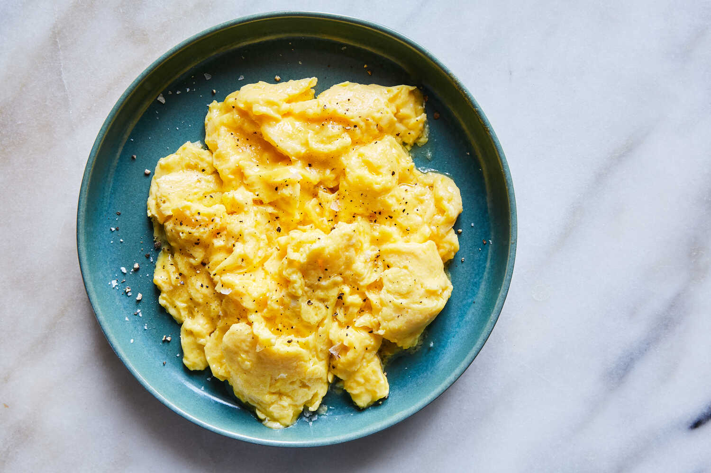

Scrambled Eggs

Description
Eggs that are delicately creamy and versatile. Perfect topped on toast, with
potato hash and roasted veggies, or by itself - with a cup of coffee or juice, of course!.
Just a handul of ingredients and a bit of patience, there is nothing complex about
this recipe. This one is guaranteed to satify!
Ingredients
For two servings:
- 4 whole eggs
- 2 tbsp unsalted butter
- salt and pepper to taste
Steps
In order to prepare the best scrambled eggs, technique is key.
Take note of the steps below. It is advised to closely follow the recipe
in order to get the consistency right.
- Carefully crack the eggs into a medium-sized saucepan, then divide the butter into four small pieces and add
them to the pan.
- Raise the stovetop temperature to a medium-high setting and begin to whisk the eggs. Whisking will be needed
throughout the cooking process, so don't stop.
- Once the eggs begin to firm, dial down the heat to low.
- When the eggs form small clumps, temporarily remove the pan from the heat. You may need to repeat this process
several times.
- Completely remove the eggs a minute or two early to avoid dry clumping. The eggs should be nearly cooked,
but should spread well.
- Add salt and pepper to taste - not too much!
- Serve on toast or with roasted sweet potatoes and enjoy!